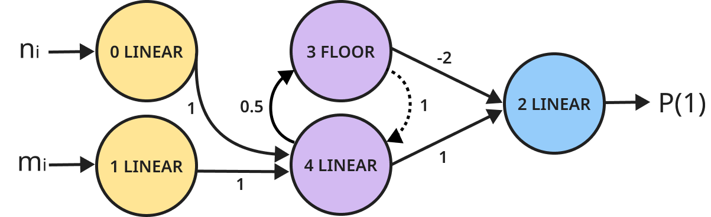
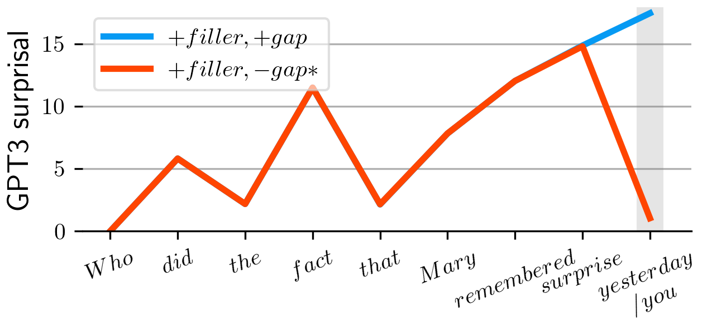

About
I am a post-doctoral researcher at the Ecole Normale
Supérieure in Paris (institut Jean Nicod). I completed my PhD in linguistics and
cognitive
science at ENS and Tel
Aviv University, where I was co-advised by Emmanuel
Chemla (ENS) and Roni
Katzir (TAU). My dissertation can be found here.
I am mainly interested in building computational models that try to learn
natural
language in the same way we think humans do. I am also interested in the evolution of
language,
formal language
theory, information theory, as well as in animal linguistics and comparative cognition, and
I
like combining these fields in thinking about the origins of the human language capacity.
I did my master's in computational
linguistics under the supervision of Roni Katzir, after completing a bachelor's
degree in Computer Science (double-major with a BA in Film), both at Tel Aviv University. In
between I worked for several tech companies in Tel Aviv, and as an editor and writer in
Israeli
press.
Papers and manuscripts
- Lan, Nur, Emmanuel Chemla, and Roni Katzir. Bridging the Empirical-Theoretical Gap in Neural Network Formal Language Learning Using Minimum Description Length. Accepted to ACL 2024 main conference.
- Lan, Nur, Emmanuel Chemla, and Roni Katzir. BridgingLarge Language Models and the Argument From the Poverty of the Stimulus. Linguistic Inquiry. 2024. To appear.
- Lan, Nur, Emmanuel Chemla, and Roni Katzir. Benchmarking Neural Network Generalization for Grammar Induction. Proceedings of the 2023 CLASP Conference on Learning with Small Data (LSD): Association for Computational Linguistics, 131–40. 2023.
- Lan, Nur, Michal Geyer, Emmanuel Chemla, and Roni Katzir. Minimum Description Length Recurrent Neural Networks. Transactions of the Association for Computational Linguistics, 10: 785-799. 2022.
- Rasin, Ezer, Iddo Berger, Nur Lan, Itamar Shefi, and Roni Katzir. Approaching explanatory adequacy in phonology using Minimum Description Length. Journal of Language Modelling 9.1 (2021): 17-66
- Lan, Nur, Emmanuel Chemla, and Shane Steinert-Threlkeld. On the Spontaneous Emergence of Discrete and Compositional Signals. Proceedings of the 58th Annual Meeting of the Association for Computational Linguistics. 2020.
- Katzir, Roni, Nur Lan, and Noa Peled. A note on the representation and learning of quantificational determiners. Proceedings of Sinn und Bedeutung. Vol. 24. No. 1. 2020.
- Lan, Nur, Ezer Rasin, and Roni Katzir. Learning Morpho-phonology Using a Genetic Algorithm. Ms. (2019).
- Rasin, Ezer, Nur Lan, and Roni Katzir. Simultaneous learning of vowel harmony and segmentation. Proceedings of the Society for Computation in Linguistics 2.1 (2019): 353-357.
- Rasin, Ezer, Iddo Berger, Nur Lan, and Roni Katzir. Learning phonological optionality and opacity from distributional evidence. In Proceedings of NELS, vol. 48, (2018): 269-282.
- Lan, Nur. Learning morpho-phonology using the Minimum Description Length principle and a genetic algorithm. MA thesis, Tel Aviv University. (2018)
Projects
Minimum Description Length Recurrent Neural Networks
With Michal Geyer, Emmanuel Chemla & Roni Katzir

Addition network
Neural networks are remarkably successful, but still fail on tasks which
are
very easy for humans,
like understanding simple regularities such as 10101010...
or aaabbb..., and
learning basic arithmetic operations like addition and multiplication.
To make networks generalize better, we replace standard objectives with a
computable version of Kolmogorov Complexity, the
Minimum Description Length principle (MDL), which balances the network's architecture size
with its accuracy.
Using an evolutionary architecture search guided by MDL, we find small
and
perfect networks that can handle tasks which are
notoriously hard
for traditional networks, like basic addition, and recognition of formal languages such as
Dyck-1 , anbn,
anb2n, anbmcn+m,
and anbncn. MDL networks
are very small, and often
contain only one or two hidden units, which makes it possible to prove that they are correct
for all strings. No other neural network that we know of has been proven do to that.
Large Language Models and the Argument From the
Poverty of
the Stimulus
With Emmanuel Chemla & Roni Katzir

GPT-3's surprisal values for a grammatical parasitic gap sentence
(blue)
and its ungrammatical variant (red)
Modern language models are trained on huge corpora that amount to years or even
lifetimes of human linguistic experience. Can we use this fact to learn about the initial
state
of a human child acquiring language?
Building on work by Wilcox et al. (2022), we examine the knowledge of state-of-the-art
language models, including GPT-j and GPT-3,
regarding important syntactic constraints.
We find that all models fail to acquire an adequate knowledge of these phenomena,
delivering predictions that clash with the judgments of human speakers. Since these models
are trained on data that go above and beyond the linguistic experience of children, our
findings
support the claim that children are equipped with innate linguistic biases that these models
don't have.
Misc.
Contact